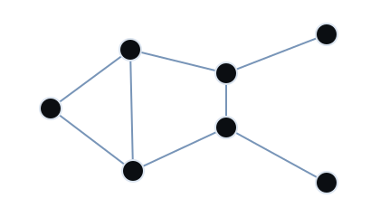

Государства и политикаStates and politics
Игроки основывают страны, определяют форму правления, принимают законы, формируют внешнюю политику и создают союзы. Границы и влияние существуют только пока государство способно их поддерживать.Players found countries, define governments, pass laws, shape foreign policy and form alliances. Borders and influence exist only while a state can maintain them.
